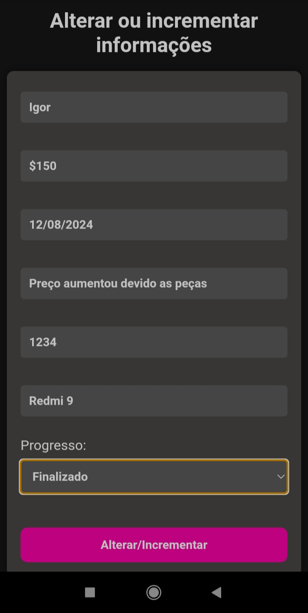
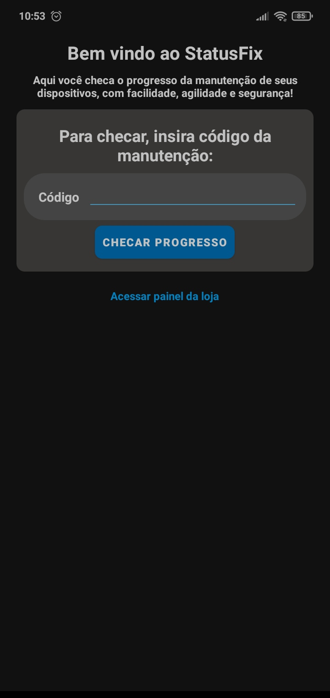
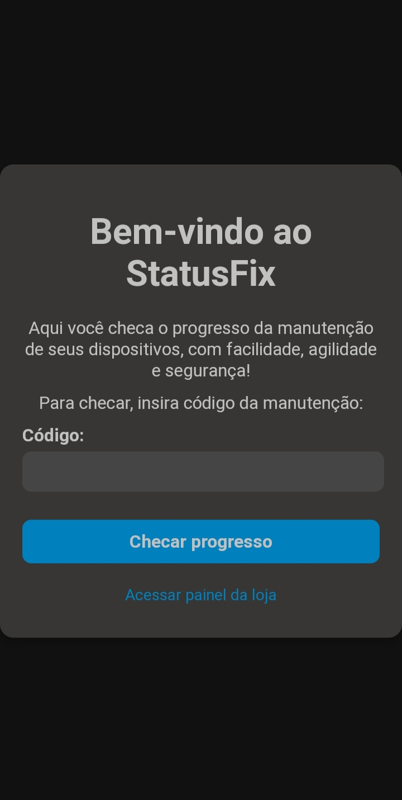
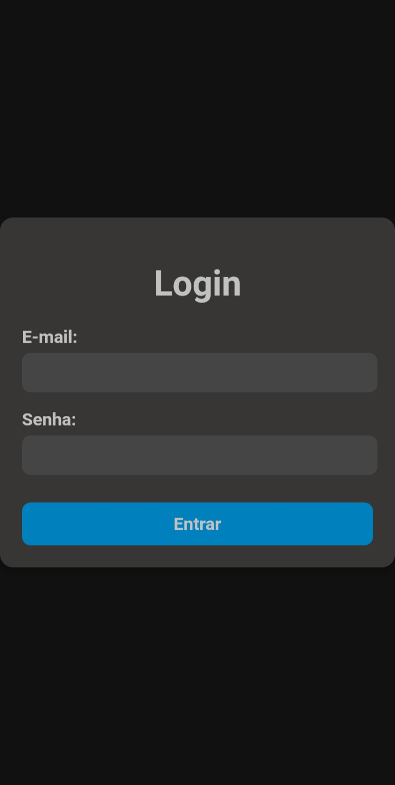

StatuxFix
Plataforma completa para empresas de manutenção registrarem processos de manutenção de dispositivos, permitindo que os usuários acompanhem o status em tempo real.
Informações do Projeto
- Linguagens Utilizadas: JavaScript, Java, Kotlin
- Funções da Plataforma: Permitir que os clientes chequem o progresso de manutenção dos dispositivos em tempo real
- Tecnologias: Firebase, XML HTML, CSS
- Versão do Site: 2
- Versão do app: 2
- Patch de segurança: 1
Imagens da plataforma
Deslize para vizualizar as demais



